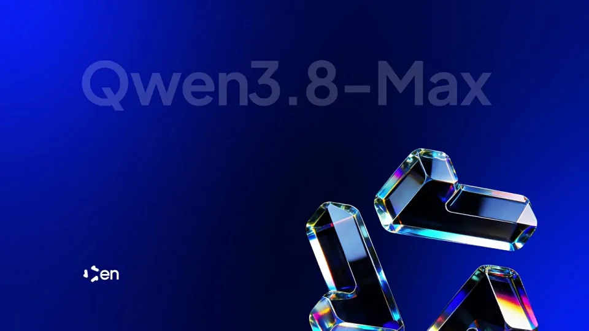

Alibaba / V174
Qwen3.8-Max：材质标志与模型公告
保持同一三瓣标志，先切换内部材质，再在蓝色背景上放大移位，把空间让给产品名称与参数。
构图与编排 可播放 · 可替换内容
整体编排规则示例
查看 HTML 源码
<!doctype html><html lang="zh-CN"><meta charset="utf-8"><meta name="viewport" content="width=device-width,initial-scale=1"><title>阿里巴巴 · 官网产品展示 · sequence</title><style>html,body{margin:0;width:100%;height:100%;overflow:hidden;background:#02072c}canvas{display:block;width:100%;height:100%;object-fit:contain}</style><body data-mode="sequence"><canvas width="1000" height="600"></canvas><script src="data.js"></script><script src="common.js"></script><script src="scene.js"></script><script src="bridge.js"></script></body></html>画面元素三瓣标志自然纹理金属边缘蓝色光场产品名参数标签
MOTION LANGUAGE
动作与构图
局部动作 · 构图规则
01
材质变化不能破坏标志轮廓
材质变化不能破坏标志轮廓规则示例
查看 HTML 源码
<!doctype html><html lang="zh-CN"><meta charset="utf-8"><meta name="viewport" content="width=device-width,initial-scale=1"><title>阿里巴巴 · 官网产品展示 · sequence</title><style>html,body{margin:0;width:100%;height:100%;overflow:hidden;background:#02072c}canvas{display:block;width:100%;height:100%;object-fit:contain}</style><body data-mode="clip" data-start="0" data-end="2.8"><canvas width="1000" height="600"></canvas><script src="data.js"></script><script src="common.js"></script><script src="scene.js"></script><script src="bridge.js"></script></body></html>三瓣围绕中心旋转，森林、水面与金属反光依次替换。中间留白与瓣间距离一致，让多种材质仍被读成同一标志。
02
名称出现前让标志让位
末段把标志推向右下并放大，左上出现产品名，参数标签放在名称下方。深蓝背景、白色大字和少量银蓝高光形成最终公告。
03
更换产品时保留信息密度
一个产品名配两枚简短参数标签即可；新标志需能承受内部贴图和放大裁切。
SEQUENCE
段落与节奏
点击段落，定位到上方编排示意。

画面参考 · 离散静帧
KEEP THE RELATIONSHIPS
制作其他主题
- 替换标志、产品名与两项参数，保留材质串联与末帧信息区。
制作约束
三瓣标志 / 自然纹理 / 金属边缘 / 蓝色光场 / 产品名 / 参数标签
- 三瓣围绕中心旋转，森林、水面与金属反光依次替换。中间留白与瓣间距离一致，让多种材质仍被读成同一标志。
- 末段把标志推向右下并放大，左上出现产品名，参数标签放在名称下方。深蓝背景、白色大字和少量银蓝高光形成最终公告。
- 一个产品名配两枚简短参数标签即可；新标志需能承受内部贴图和放大裁切。